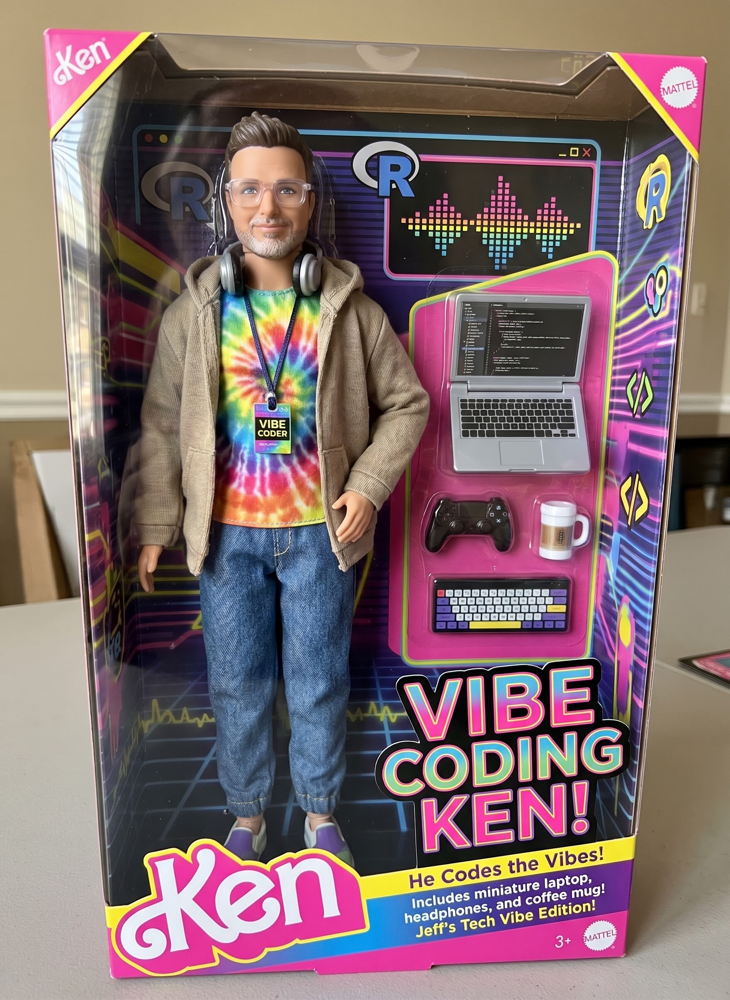

Specs, checks, and agent skills that make AI output reliable
Navitas Data Sciences
November 4, 2026
Make AI output reliable and traceable
BBSW 2026 Day 0 Hands-on Workshop · Nov 4, 2026 · Genentech Campus
Jeff Dickinson, PhD — Navitas Data Sciences

He codes the vibes.
Great for exploring. But would you hand Ken’s ADVS to a reviewer?
Today: from vibe coding to a harness you can trust.
github.com/jeffreyad/
bbsw-2026-harness-workshop
prompts.md — every prompt, ready to copyfallback/SPEC.md — ready-made ADVS specPaste into Posit Assistant (Claude Code works too).
Core: 1, 2, 3, 5 · Stretch: 4, 6 · Sprint: 7
Agent = model + harness
The model is the same for everyone. What differs is everything around it:
A good harness turns “plausible-looking output” into “output I can trust and trace.”
Each step is a prompt you paste. You review at every step.
A spec is a short file the agent reads before writing code. Do not write it cold — have the agent ask you questions.
I want to derive ADVS from the VS domain in data/sdtm and the ADSL in
data/adam/adsl.parquet. Work in a new subfolder called harness/.
Do not write any code yet. Interview me, one question at a time, about
anything ambiguous: baseline definition, parameters, visit windows, flags.
Ask at most 5 questions. When I say "done" (or after question 5), write
harness/SPEC.md with a table of variables:
name, label, derivation rule, source, and open questions.Answer the questions. Then read harness/SPEC.md and edit anything wrong.
Interview went sideways? Copy fallback/SPEC.md into harness/.
If you can’t point to the spec line that justifies a line of code, the output isn’t traceable.
Two rows from fallback/SPEC.md:
Decisions made: baseline = last non-missing on or before TRTSDT · CHG is NA (not 0) on baseline · SAFFL = “Y” only
Open questions the agent should not answer for you:
Agents iterate well against a failing test. Give it one.
Read harness/SPEC.md. Before deriving anything, write harness/checks.R:
a set of stopifnot() assertions that encode every testable rule in the
spec (one row per record key, flags are "Y" or NA, baseline and change
rules, etc.). Do not write the derivation yet. Show me the checks and tell me which
spec rules you could NOT turn into a check.Then:
Ask the agent to mark every decision that belongs to you:
Your attention goes to the marked lines, not the whole file.
A skill is a folder with a SKILL.md the agent loads when a request matches it.
skills/
my-skill/
SKILL.md # when to use it, step-by-step instructions
references/ # conventions, failure modes
scripts/ # code the agent can runSpec + checks become reusable when you capture them as a skill.
Example: the community admiral skills in RConsortium/pharma-skills.
Community benchmarks in RConsortium/pharma-skills: the same task run with and without the skill, scored against a rubric.
| Skill | Scenarios | With skill | Without | W / T / L |
|---|---|---|---|---|
| admiral-adsl | ADSL, baseline VS, pop. flags | 93% | 70% | 2 / 1 / 0 |
| admiral-adae | TEAE, imputation, recoding | 100% | 67% | 2 / 0 / 0 |
| admiral-bds | ADVS, ADLB, CTCAE grading | 91% | 72% | 3 / 0 / 0 |
| admiral-adtte, -adrs | time-to-event, RECIST 1.1 | 82% | 56% | 2 / 0 / 0 |
| sdtm-oak | AE domain from raw | 88% | 63% | 1 / 0 / 0 |
| group-sequential-design | 15 trial-design scenarios | 73% | 51% | 10 / 2 / 3 |
| clinical-trial-simulation | NSCLC, NPH oncology sims | 90% | 91% | 0 / 1 / 1 |
Mean % of rubric items passed, latest scored run per issue (mostly Claude); W / T / L = skill wins, ties, losses. Small n, rubrics differ by issue — directional, not a validated comparison.
Pattern: big gains on convention-heavy derivations; little or none where the base model already knows the method.
Look at harness/SPEC.md, harness/checks.R, and harness/derive_advs.R
we just built. Create a skill called advs-derivation that captures how
to do this task again, saved in .posit/assistant/skills/advs-derivation/
(SKILL.md inside it).
The skill should include:
- frontmatter with a name and a description that says when to use it
- the steps we followed (interview, spec, checks, derive, review markers)
- the conventions we settled on
- what to ask the user rather than assume
Keep it under 100 lines. Show it to me before saving.Claude Code: save to .claude/skills/advs-derivation/SKILL.md instead. Then start a new chat so the skill loads, and test it:
Did the agent load your skill without being told to?
The harness is code too: review it, version it, test it.
Pick something from your own work — or one of these:
You have the full loop: spec → checks → skill → generate → refine.
Rules of the sprint:
Two minutes each:
Output from this workflow is a drafting aid, not a validated deliverable.
All prompts: prompts.md in github.com/jeffreyad/bbsw-2026-harness-workshop
LLM output can be wrong or vary between runs. Independently verify all generated code and results against your own QC process before they inform any regulatory, clinical, safety, or GxP-regulated activity, and comply with your organization’s policies.
Review any script an agent writes before running it, and only supply data you are permitted to use.
Jeff Dickinson, PhD
Navitas Data Sciences
jeff.dickinson@navitaslifesciences.com · github.com/jeffreyad
Questions?
Agentic AI for Biometrics · BBSW 2026 Day 0